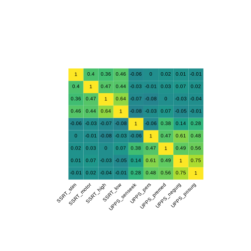
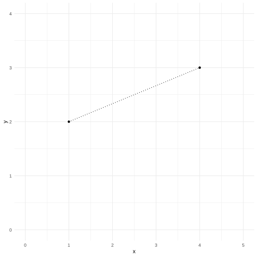
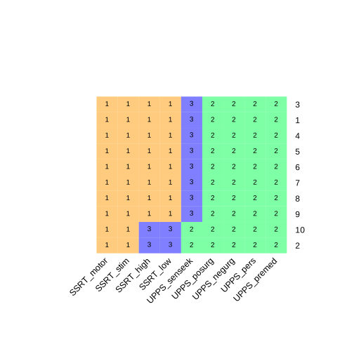
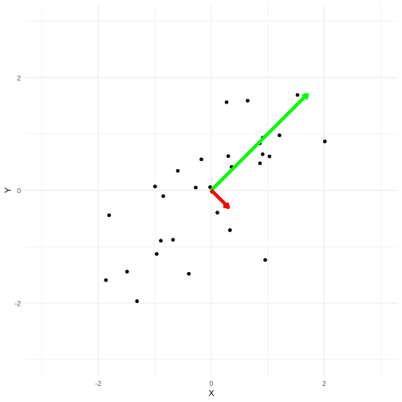
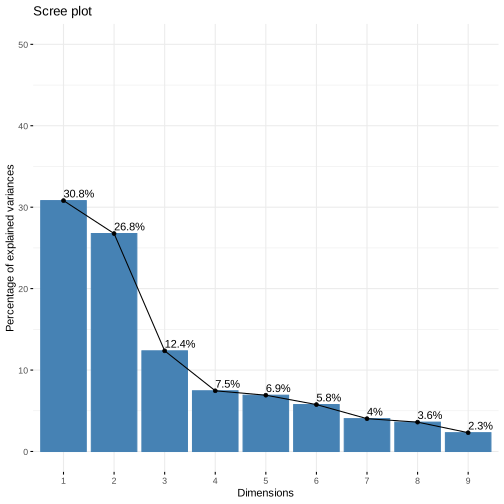
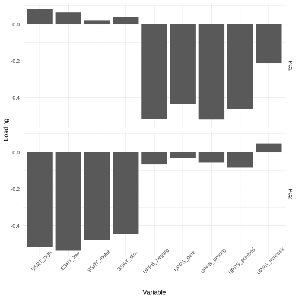
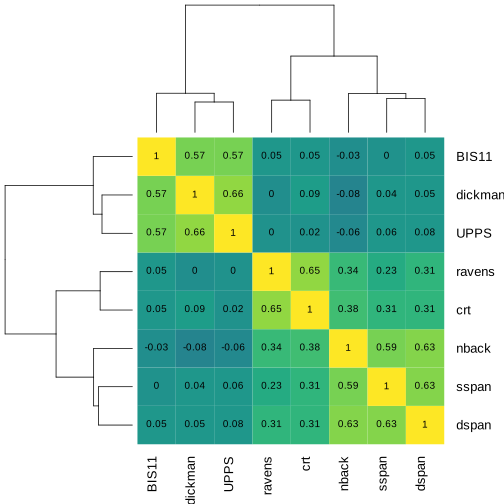
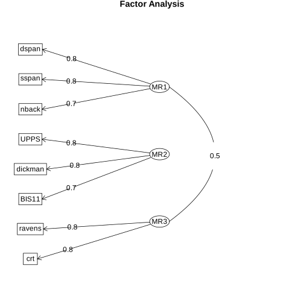
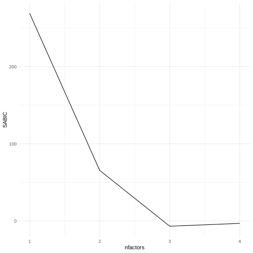
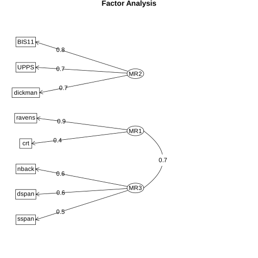

Chapter 16: Multivariate statistics
Contents
Chapter 16: Multivariate statistics#
# import MASS first because it otherwise will mask dplyr::select
library(MASS)
library(tidyverse)
library(ggdendro)
library(psych)
library(gplots)
library(pdist)
library(factoextra)
library(viridis)
library(mclust)
library(knitr)
theme_set(theme_minimal())
── Attaching packages ─────────────────────────────────────────────────────────────────────────────────────────────────────────────────────────────── tidyverse 1.3.2 ──
✔ ggplot2 3.4.1 ✔ purrr 1.0.1
✔ tibble 3.1.8 ✔ dplyr 1.1.0
✔ tidyr 1.3.0 ✔ stringr 1.5.0
✔ readr 2.1.4 ✔ forcats 1.0.0
── Conflicts ────────────────────────────────────────────────────────────────────────────────────────────────────────────────────────────────── tidyverse_conflicts() ──
✖ dplyr::filter() masks stats::filter()
✖ dplyr::lag() masks stats::lag()
✖ dplyr::select() masks MASS::select()
Attaching package: ‘psych’
The following objects are masked from ‘package:ggplot2’:
%+%, alpha
Attaching package: ‘gplots’
The following object is masked from ‘package:stats’:
lowess
Welcome! Want to learn more? See two factoextra-related books at https://goo.gl/ve3WBa
Loading required package: viridisLite
Package 'mclust' version 6.0.0
Type 'citation("mclust")' for citing this R package in publications.
Attaching package: ‘mclust’
The following object is masked from ‘package:psych’:
sim
The following object is masked from ‘package:purrr’:
map
Multivariate data setup#
behavdata <- read_csv('https://raw.githubusercontent.com/statsthinking21/statsthinking21-figures-data/main/Eisenberg/meaningful_variables.csv',
show_col_types = FALSE)
demoghealthdata <- read_csv('https://raw.githubusercontent.com/statsthinking21/statsthinking21-figures-data/main/Eisenberg/demographic_health.csv',
show_col_types = FALSE)
# recode Sex variable from 0/1 to Male/Female
demoghealthdata <- demoghealthdata %>%
mutate(Sex = recode_factor(Sex, `0`="Male", `1`="Female"))
# combine the data into a single data frame by subcode
alldata <- merge(behavdata, demoghealthdata, by='subcode')
rename_list = list('upps_impulsivity_survey' = 'UPPS', 'sensation_seeking_survey' = 'SSS',
'dickman_survey' = 'Dickman', 'bis11_survey' = 'BIS11',
'spatial_span' = 'spatial', 'digit_span' = 'digit',
'adaptive_n_back' = 'nback', 'dospert_rt_survey' = 'dospert',
'motor_selective_stop_signal.SSRT' = 'SSRT_motorsel',
'stim_selective_stop_signal.SSRT' = 'SSRT_stimsel',
'stop_signal.SSRT_low' = 'SSRT_low',
'stop_signal.SSRT_high' = 'SSRT_high')
impulsivity_variables = c('Sex')
keep_variables <- c("spatial.forward_span", "spatial.reverse_span", "digit.forward_span","digit.reverse_span", "nback.mean_load")
for (potential_match in names(alldata)){
for (n in names(rename_list)){
if (str_detect(potential_match, n)){
# print(sprintf('found match: %s %s', n, potential_match))
replacement_name <- str_replace(potential_match, n, toString(rename_list[n]))
names(alldata)[names(alldata) == potential_match] <- replacement_name
impulsivity_variables <- c(impulsivity_variables, replacement_name)
}
}
}
impulsivity_data <- alldata[,impulsivity_variables] %>%
drop_na()
ssrtdata = alldata[,c('subcode', names(alldata)[grep('SSRT_', names(alldata))])] %>%
drop_na() %>%
dplyr::select(-stop_signal.proactive_SSRT_speeding)
upps_data <- alldata %>%
dplyr::select(starts_with('UPPS'), 'subcode') %>%
setNames(gsub("UPPS.", "", names(.)))
impdata <- inner_join(ssrtdata, upps_data) %>%
drop_na() %>%
dplyr::select(-subcode) %>%
scale() %>%
as.data.frame() %>%
dplyr::rename(SSRT_motor = SSRT_motorsel,
SSRT_stim = SSRT_stimsel,
UPPS_pers = lack_of_perseverance,
UPPS_premed = lack_of_premeditation,
UPPS_negurg = negative_urgency,
UPPS_posurg = positive_urgency,
UPPS_senseek = sensation_seeking
)
Joining with `by = join_by(subcode)`
Figure 16.1#
pairs.panels(impdata, lm=TRUE)

Figure 16.2#
cc = cor(impdata)
par(mai=c(2, 1, 1, 1)+0.1)
heatmap.2(cc, trace='none', dendrogram='none',
cellnote=round(cc, 2), notecol='black', key=FALSE,
margins=c(12,8), srtCol=45, symm=TRUE, revC=TRUE, #notecex=4,
cexRow=1, cexCol=1, offsetRow=-150, col=viridis(50))

Figure 16.3#
ccmtx = read_delim('https://raw.githubusercontent.com/statsthinking21/statsthinking21-figures-data/main/myconnectome/ccmtx_sorted.txt', col_names=FALSE,show_col_types = FALSE)
parcel_data = read_delim('https://raw.githubusercontent.com/statsthinking21/statsthinking21-figures-data/main/myconnectome/parcel_data.txt', col_names = FALSE,show_col_types = FALSE) %>% dplyr::select(-X1)
names(parcel_data) = c('hemis', 'X', 'Y', 'Z', 'lobe',
'region', 'network', 'yeo7network', 'yeo17network')
parcel_data <- parcel_data %>%
arrange(hemis, yeo7network)
parcel_data$netdiff = FALSE
parcel_data$netdiff[2:nrow(parcel_data)] = parcel_data$yeo7network[2:nrow(parcel_data)] != parcel_data$yeo7network[1:(nrow(parcel_data) - 1)]
hemis_to_use = 'L'
tmp <- ccmtx[parcel_data$hemis == hemis_to_use,]
ccmtx_lh <- tmp[, parcel_data$hemis == hemis_to_use]
hemis_parcel_data = parcel_data %>%
filter(hemis == hemis_to_use)
heatmap.2(as.matrix(ccmtx_lh), trace='none', symm=T,
dendrogram='none', col=viridis(50), Rowv=FALSE, Colv=FALSE,
labCol = "", labRow="", key=FALSE)

Figure 16.4#
euc_df <- data.frame(x=c(1, 4), y=c(2, 3))
ggplot(euc_df, aes(x,y)) + geom_point() +
xlim(0, 5) + ylim(0, 4) +
annotate('segment', x=1, y=2, xend=4, yend=3, linetype='dotted')

Figure 16.5#
countries <- read_delim('https://raw.githubusercontent.com/statsthinking21/statsthinking21-figures-data/main/countries/country_data.csv', na=c('')) %>%
# filter out countries with less than 1M population
filter(Population2020 > 500000)
latlong <- countries %>%
dplyr::select(latitude, longitude)
#ggplot(countries, aes(longitude, latitude, color=Continent)) +
# geom_point()
# based on https://stanford.edu/~cpiech/cs221/handouts/kmeans.html
# need to clarify license!
# and https://jakevdp.github.io/PythonDataScienceHandbook/05.11-k-means.html
# (Code under MIT license)
k = 6
set.seed(123456)
# select random starting points as the means - i.e. Forgy method
centroids = latlong[sample.int(nrow(latlong), k),]
iterations = 0
oldCentroids = data.frame()
MAX_ITERATIONS <- 100
shouldStop <- function(oldCentroids, centroids, iterations){
if (iterations > MAX_ITERATIONS){
return(TRUE)
}
if (dim(oldCentroids)[1] == 0){
return(FALSE)
}
return(all.equal(as.matrix(centroids), as.matrix(oldCentroids)) == TRUE)
}
getLabels <- function(dataSet, centroids){
d <- as.matrix(pdist::pdist(dataSet, centroids))
# For each element in the dataset, chose the closest centroid.
# Make that centroid the element's label.
return(apply(d, 1, which.min))
}
getCentroids <- function(dataSet, labels, k){
# Each centroid is the geometric mean of the points that
# have that centroid's label. Important: If a centroid is empty (no points have
# that centroid's label) you should randomly re-initialize it.
newCentroids <- NULL
for (i in 1:k){
labeldata <- dataSet[labels==i,]
newCentroids <- rbind(newCentroids, apply(labeldata, 2, mean))
}
return(newCentroids)
}
all_centroids_df = data.frame(centroids) %>%
mutate(label_kmeans=as.factor(seq(1,nrow(.))),
iter=0)
while (!shouldStop(oldCentroids, centroids, iterations)) {
# Save old centroids for convergence test. Book keeping.
oldCentroids = centroids
iterations = iterations + 1
# Assign labels to each datapoint based on centroids
labels = getLabels(latlong, centroids)
# Assign centroids based on datapoint labels
centroids = getCentroids(latlong, labels, k)
centroids_df = data.frame(centroids) %>%
mutate(label_kmeans=as.factor(seq(1,nrow(.))),
iter=iterations)
all_centroids_df = rbind(all_centroids_df, centroids_df)
}
#sprintf('Completed after %d iterations', iterations)
countries <- countries %>%
mutate(label_kmeans = as.factor(labels))
centroid_df = all_centroids_df %>%
filter(iter==iterations)
p = ggplot(countries, aes(longitude, latitude, color=label_kmeans)) +
geom_point() +
geom_point(data=centroid_df,alpha=0.5, size=4)
for (i in 1:iterations){
for (j in 1:k){
iter_df = all_centroids_df %>% filter(iter==i, label_kmeans==j)
prev_df = all_centroids_df %>% filter(iter==i-1, label_kmeans==j)
p = p + annotate('segment', x = iter_df$longitude,
y = iter_df$latitude,
xend = prev_df$longitude,
yend = prev_df$latitude, alpha=0.7)
}
}
p + geom_point(data=all_centroids_df %>% filter(iter==0),
size=2, shape=15, color='black')
Rows: 166 Columns: 10
── Column specification ────────────────────────────────────────────────────────────────────────────────────────────────────────────────────────────────────────────────
Delimiter: ","
chr (6): CountryCode, CountryName, Region, IncomeGroup, Continent, country
dbl (4): Population2020, latitude, longitude, GDP2020
ℹ Use `spec()` to retrieve the full column specification for this data.
ℹ Specify the column types or set `show_col_types = FALSE` to quiet this message.
Table 16.1#
t = table(labels, countries$Continent)
t_df = pivot_wider(as.data.frame(t), id_cols=labels, names_from=Var2, values_from=Freq) %>%
rename(Africa = AF,
Europe = EU,
`North America` = `NA`,
Asia = AS,
Oceania = OC,
`South America` = SA)
kable(t_df, caption='Comparison of k-means clustering result to actual continents.')
Table: Comparison of k-means clustering result to actual continents.
|labels | Africa| Asia| Europe| North America| Oceania| South America|
|:------|------:|----:|------:|-------------:|-------:|-------------:|
|1 | 5| 1| 36| 0| 0| 0|
|2 | 3| 24| 0| 0| 0| 0|
|3 | 0| 0| 0| 0| 0| 7|
|4 | 0| 0| 0| 15| 0| 4|
|5 | 0| 10| 0| 0| 6| 0|
|6 | 35| 0| 0| 0| 0| 0|
Figure 16.6#
set.seed(123)
cluster_results = c()
for (i in 1:10){
km.result = kmeans(t(impdata), 3)
cluster_results = rbind(cluster_results, km.result$cluster)
# relabel so that cluster nums match when solution is identical
for (j in 1:(i-1)){
if (j>0 && adjustedRandIndex(cluster_results[i, ], cluster_results[j, ]) == 1){
cluster_results[i, ] = cluster_results[j, ]
break
}
}
}
heatmap.2(cluster_results, dendrogram='none', trace='none',
col=rainbow(3, start=0.1, alpha=0.5), notecol='black',
cellnote=cluster_results, notecex=1, key=FALSE,
margins=c(12,8), srtCol=45, )

Figure 16.7#
d <- dist(t(impdata))
hc <- hclust(d, method='average')
#convert cluster object to use with ggplot
dendr <- dendro_data(hc, type="rectangle")
# TODO: https://stackoverflow.com/questions/21474388/colorize-clusters-in-dendogram-with-ggplot2
cutoffs = c(25, 20, 19)
#your own labels (now rownames) are supplied in geom_text() and label=label
ggplot() +
geom_segment(data=segment(dendr), aes(x=x, y=y, xend=xend, yend=yend)) +
geom_text(data=label(dendr), aes(x=x, y=y,label=dendr$labels$label, hjust=0), size=3) +
coord_flip() + scale_y_reverse(expand=c(0.2, 0)) +
theme(axis.line.y=element_blank(),
axis.ticks.y=element_blank(),
axis.text.y=element_blank(),
axis.title.y=element_blank(),
panel.background=element_rect(fill="white"),
panel.grid=element_blank()) +
geom_hline(yintercept=cutoffs[1], color='blue') +
geom_hline(yintercept=cutoffs[2], color='green') +
geom_hline(yintercept=cutoffs[3], color='red') +
ylim(30, -10)
Scale for y is already present.
Adding another scale for y, which will replace the existing scale.
Figure 16.8#
N <-30 #setting my sample size
mu <- c(0, 0) #setting the means
c1 <- .7
sigma <- matrix(c(1, c1, c1, 1),2, 2) #setting the covariance matrix values. The "2,2" part at the tail end defines the number of rows and columns in the matrix
set.seed(04182019) #setting the seed value so I can reproduce this exact sim later if need be
simdata <- mvrnorm(n=N,mu=mu,Sigma=sigma, empirical=TRUE) #simulate the data, as specified above
sim_df <- data.frame(simdata)
names(sim_df) <- c("Y", "X")
# ggplot(sim_df, aes(X, Y)) +
# geom_point() +
# xlim(-3, 3) +
# ylim(-3, 3) +
# geom_smooth(method='lm', se=FALSE)
# scale variables
sim_df <- sim_df %>%
mutate(X = scale(X),
Y = scale(Y))
# compute covariance matrix
sim_df_cov<- cov(sim_df)
# Compute eigenvalues/eigenvectors
cov_eig <- eigen(sim_df_cov)
g <- ggplot(sim_df, aes(X, Y)) +
geom_point(size=1.5) +
xlim(-3, 3) +
ylim(-3, 3)
# based on https://stats.stackexchange.com/questions/153564/visualizing-pca-in-r-data-points-eigenvectors-projections-confidence-ellipse
# calculate slopes as ratios
cov_eig$slopes[1] <- cov_eig$vectors[1,1]/cov_eig$vectors[2,1]
cov_eig$slopes[2] <- cov_eig$vectors[1, 2]/cov_eig$vectors[2,2]
g <- g + geom_segment(x = 0, y = 0,
xend = cov_eig$values[1],
yend = cov_eig$slopes[1] * cov_eig$values[1],
colour = "green", linewidth=1.5,
arrow = arrow(length = unit(0.2, "cm"))) # add arrow for pc1
g <- g + geom_segment(x = 0, y = 0,
xend = cov_eig$values[2],
yend = cov_eig$slopes[2] * cov_eig$values[2],
colour = "red", linewidth=1.5,
arrow = arrow(length = unit(0.2, "cm"))) # add arrow for pc2
g

Figure 16.9#
ssrtdata <- as.data.frame(impdata) %>% dplyr::select(starts_with('SSRT'))
pca_result_ssrt <- prcomp(ssrtdata)
pca_ssrt_varacct = summary(pca_result_ssrt)$importance[2,]
ssrt_df = data.frame(dataset='SSRT', PC=seq(1, 4), VarianceAccountedFor=pca_ssrt_varacct)
uppsdata <- as.data.frame(impdata) %>% dplyr::select(!starts_with('SSRT'))
pca_result_upps <- prcomp(uppsdata)
pca_upps_varacct = summary(pca_result_upps)$importance[2,]
upps_df = data.frame(dataset='UPPS', PC=seq(1, 5), VarianceAccountedFor=pca_upps_varacct)
var_df <- rbind(ssrt_df, upps_df)
ggplot(var_df, aes(PC, VarianceAccountedFor, color=dataset)) +
geom_line(size=1.5)
Warning message:
“Using `size` aesthetic for lines was deprecated in ggplot2 3.4.0.
ℹ Please use `linewidth` instead.”
Correlation test for PCA components#
pca_df <- data.frame(SSRT=predict(pca_result_ssrt)[, 'PC1'],
UPPS=predict(pca_result_upps)[, 'PC1'])
ct = cor.test(pca_df$SSRT, pca_df$UPPS)
ct
Pearson's product-moment correlation
data: pca_df$SSRT and pca_df$UPPS
t = -0.26801, df = 327, p-value = 0.7889
alternative hypothesis: true correlation is not equal to 0
95 percent confidence interval:
-0.12275066 0.09345838
sample estimates:
cor
-0.01481936
Figure 16.10#
imp_pc = prcomp(impdata, scale. = T)
fviz_screeplot(imp_pc, addlabels = TRUE, ylim = c(0, 50))

Figure 16.11#
loading_df = as.data.frame(imp_pc$rotation)
loading_df['Variable'] = rownames(loading_df)
loading_df = loading_df %>%
pivot_longer(!Variable, names_to='PC', values_to='Loading') %>%
filter(PC %in% c('PC1', 'PC2'))
ggplot(loading_df ,
aes(Variable, Loading)) + geom_bar(stat='identity') +
theme(axis.text.x = element_text(angle = 45)) +
facet_grid(PC ~ .)

Figure 16.12#
N <- 200 #setting my sample size
mu <- rep(0, 3) #setting the means
c1 <- .5 # correlation b/w WM and FR
sigma <- matrix(c(1, c1, 0, c1, 1, 0, 0, 0, 1), 3, 3) #setting the covariance matrix values. The "2,2" part at the tail end defines the number of rows and columns in the matrix
set.seed(04182019) #setting the seed value so I can reproduce this exact sim later if need be
simdata <- mvrnorm(n=N,mu=mu,Sigma=sigma, empirical=TRUE) #simulate the data, as specified above
latent_df <- data.frame(simdata)
names(latent_df) = c('WM', 'FR', 'IMP')
# create observed variables by matrix-multiplying the latent variables
# by a weight matrix
set.seed(123456)
tasknames = c('nback', 'dspan', 'sspan', 'ravens', 'crt', 'UPPS', 'BIS11', 'dickman')
ntasks = length(tasknames)
weights = matrix(data = 0, 3, ntasks)
weights[1, 1:3] = 1
weights[2, 4:5] = 1
weights[3, 6:8] = 1
noise_sd = .6
observed_vals = as.matrix(latent_df) %*% weights +
mvrnorm(n=N, mu=rep(0, ntasks), Sigma=diag(ntasks) * noise_sd)
observed_df <- data.frame(observed_vals)
names(observed_df) <- tasknames
cormtx = t(cor(observed_df))
heatmap.2(cormtx, trace='none', symm=TRUE,
revC=TRUE,col=viridis(50),
cellnote=round(cormtx, 2), notecol='black', key=FALSE,)

Factor analysis output#
fa_result <- fa(observed_df, nfactors = 3)
summary(fa_result)
Loading required namespace: GPArotation
Factor analysis with Call: fa(r = observed_df, nfactors = 3)
Test of the hypothesis that 3 factors are sufficient.
The degrees of freedom for the model is 7 and the objective function was 0.04
The number of observations was 200 with Chi Square = 7.96 with prob < 0.34
The root mean square of the residuals (RMSA) is 0.01
The df corrected root mean square of the residuals is 0.03
Tucker Lewis Index of factoring reliability = 0.993
RMSEA index = 0.026 and the 10 % confidence intervals are 0 0.094
BIC = -29.13
With factor correlations of
MR1 MR2 MR3
MR1 1.00 0.03 0.47
MR2 0.03 1.00 0.03
MR3 0.47 0.03 1.00
Figure 16.13#
fa.diagram(fa_result)

Figure 16.14#
BIC_results = data.frame(nfactors=seq(1, 4), SABIC=NA)
for (i in 1:nrow(BIC_results)){
BIC_results$SABIC[i] = fa(observed_df, nfactors=BIC_results$nfactors[i])$SABIC
}
ggplot(BIC_results, aes(nfactors, SABIC)) + geom_line()

Figure 16.15#
imp_efa_df <- behavdata %>%
dplyr::select(adaptive_n_back.mean_load,
bis11_survey.Nonplanning,
cognitive_reflection_survey.correct_proportion,
dickman_survey.dysfunctional,
digit_span.reverse_span,
ravens.score,
spatial_span.reverse_span,
upps_impulsivity_survey.lack_of_premeditation
) %>%
rename(UPPS = upps_impulsivity_survey.lack_of_premeditation,
nback = adaptive_n_back.mean_load,
BIS11 = bis11_survey.Nonplanning,
dickman = dickman_survey.dysfunctional,
dspan = digit_span.reverse_span,
sspan = spatial_span.reverse_span,
crt = cognitive_reflection_survey.correct_proportion,
ravens = ravens.score
)
BIC_df <- data.frame(nfactors = seq(1, 4), SABIC=NA)
for (i in 1:nrow(BIC_df)){
fa_result <- fa(imp_efa_df, nfactors=BIC_df$nfactors[i])
BIC_df$SABIC[i] = fa_result$SABIC
}
#ggplot(BIC_df, aes(nfactors, SABIC)) +
# geom_line()
fa_result <- fa(imp_efa_df, nfactors=3)
#summary(fa_result)
fa.diagram(fa_result)
